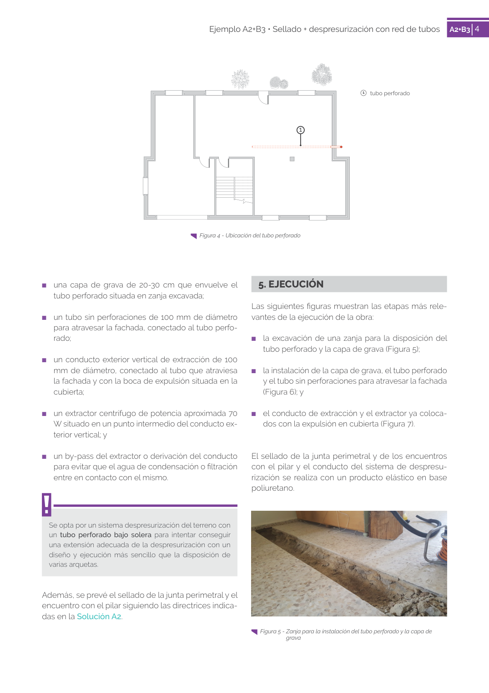

<!doctype html>
<html lang="es"><head><meta charset="utf-8">
<meta name="viewport" content="width=device-width, initial-scale=1">
<title>GUIA · Página física 4</title><link rel="stylesheet" href="../estilo.css">
</head><body>
<nav><a href="../index.html">Índice</a> › <a href="../doc/guia-pdf-53103f0ba4da-2017-c3d129965a82.html">GUIA</a></nav>

<h1>GUIA · Página física 4</h1>
<header class="meta"><p><strong>Ejemplo A2 B3 Sellado despresurizacion con red de tubos</strong> · edición 2017 · capa guia</p>
<p>Documento <code>GUIA-PDF-53103f0ba4da</code> · SHA-256 del PDF <code>c3d129965a820e79889b15a57c180b33f580cc46a59ea9a7e6e546ed982714f5</code></p>
<p>Página física 4 de 6.</p>
<p><a href="../../contenido/docs/GUIA-PDF-53103f0ba4da/2017__c3d129965a82/fuente.pdf#page=4">Copia fiel del PDF fuente</a> · <a href="https://www.codigotecnico.org/pdf/GuiasyOtros/GuiaRadon/Ejemplo_A2+B3_Sellado+despresurizacion_con_red_de_tubos.pdf">Fuente oficial</a></p>
<p><a href="https://www.codigotecnico.org/Guias/GuiaRadon.html">Ficha de la disposición en la fuente oficial</a></p>
<div class="cita"><p><a href="../../contenido/docs/GUIA-PDF-53103f0ba4da/2017__c3d129965a82/fuente.pdf#page=6">Créditos y autoría en el PDF fuente</a>. Reproducción con cita de fuente y autores.</p>
<p>Permiso literal: Se permite la reproducción total o parcial del contenido de este do­ Edición actual: septiembre 2020 cumento siempre y cuando se cite la fuente original y a sus autores.</p>
<details><summary>Leer los créditos completos y la autoría</summary><pre class="literal">                                     Ejemplo A2+B3 • Sellado + despresurización con red de tubos  A2+B3 66


                                                                     Este documento ha sido elaborado por el Instituto de ciencias
                                                         de la construcción Eduardo Torroja (IETcc) bajo la supervisión
                                                         de la Dirección General de Agenda Urbana y Arquitectura del
                                                                             Ministerio de Transportes, Movilidad y Agenda Urbana (MITMA).

                                                                              El IETcc, perteneciente al Consejo Superior de Investigaciones
                                                                                 Científicas (CSIC), es el centro de investigación en edificación
                                                         de referencia en España. La Unidad de Calidad en la Construc­
                                                                       ción del IETcc asesora al MITMA en la elaboración del Código
                                                                   Técnico de la Edificación que, desde el año 2019, cuenta con la

                                                             SECRETARÍA                                                                GENERAL                                                                      DE                     sección HS6 Protección frente a la exposición al radón.
                                                  AGENDA URBANA                                                                     Y VIVIENDA                              MINISTERIO            GOBIERNO                          DE                               TRANSPORTES,                                          MOVILIDAD
            DE ESPAÑA      Y                         AGENDA                                URBANA                                                        DIRECCIÓN                                                                GENERAL                                                                      DE
                                                  AGENDA URBANA Y ARQUITECTURA                Dirección y Coordinación:
                                                                            Ministerio de Transportes, Movilidad y Agenda Urbana
                                                                           Isabel Marcos Anasagasti
                              MINISTERIO            GOBIERNO                         DE                               CIENCIA                                           Raquel Lara Campos            DE ESPAÑA                                E INNOVACIÓN
                                                              Eduardo González de Prado
                                                                                   Instituto de ciencias de la construcción Eduardo Torroja CSIC
                                                                                      Pilar Linares Alemparte

Esta ficha forma parte de una serie de documentos englobados       Autores:
en una misma publicación, cuyo objetivo es constituir una he­      Carmen Alonso Ruiz de Rivas
rramienta de ayuda para el diseño de soluciones de protección        Borja Frutos Vázquez
frente al radón:                                                                    Pilar Linares Alemparte
                                                                   Sonia García Ortega:
■  Guía de rehabilitación frente al radón

Fichas de soluciones:                                               Diagnóstico y diseño de la solución:
                                                                        Borja Frutos Vázquez
A: De aislamiento del edificio                                                              Eduardo Muñoz Lorenzo
■       Solución A1. Barrera frente al radón                          Ángel Sánchez Malo · Geomnia Natural Resources SLNE
■       Solución A1-1. Barrera frente al radón. Encuentros
■       Solución A2. Sellado de fisuras, grietas, encuentros y juntas      Ejecución material de la obra:
■       Solución A3. Puertas estancas                            Geomnia Natural Resources SLNE
■       Solución A4. Creación de sobrepresión
                                                                               Edita:
B: De reducción del radón antes de que penetre en los locales       Centro de Publicaciones Secretaría General Técnica
  a proteger                                                               Ministerio de Transportes, Movilidad y Agenda Urbana©

■       Solución B1. Ventilación del espacio de contención: cá­                                                                  Entidad colaboradora:
                 mara de aire                                                                Consejo Superior de Investigaciones Científicas · CSIC
■       Solución B2. Ventilación del espacio de contención: loca­                                                                             Ministerio de Ciencia e Innovación
                      les no habitables
■       Solución B3. Despresurización del terreno                        Catálogo de publicaciones de la Administración General
                                                                         del Estado: publicacionesoficiales.boe.es
C: De reducción del radón tras penetrar en los locales a proteger
■       Solución C1. Ventilación de los locales habitables                  Centro virtual de publicaciones del Ministerio de Transpor­
                                                                                         tes, Movilidad y Agenda Urbana: www.mitma.gob.es

Fichas de ejemplos:
                                                                     Página web del Código Técnico de la Edificación:
■      Ejemplo A1+B3. Barrera frente al radón + despresurización          www.codigotecnico.org
                    con red de tubos
■      Ejemplo A2+B1. Sellado + ventilación de la cámara sanitaria      Maquetación y diseño gráfico:
■      Ejemplo A2+B3. Sellado + despresurización con red de tubos       Lapizmente. Estrategia • Diseño Gráfico
■      Ejemplo A2+C1. Sellado + ventilación mecánica de los loca-                                                                     Los contenidos o ideas recogidas en este documento pertenecen a
                          les habitables                                   sus autores. Este documento está basado en el conocimiento dispo­
                                                                                    nible en el momento de su publicación. No se aceptará por las institu­
Publicación completa:                                                    ciones ni los autores implicados responsabilidad de ningún tipo por el
ISBN: 978-84-498-1045-9                                             uso de estas recomendaciones. Las figuras tienen carácter ilustrativo
NIPO: 796-20-136-5                                                   y no deben interpretarse como detalles constructivos.
1ª edición: septiembre 2020                                                               Se permite la reproducción total o parcial del contenido de este do­
Edición actual: septiembre 2020                                    cumento siempre y cuando se cite la fuente original y a sus autores.</pre></details></div>
<div class="aviso"><strong>Alcance y límites</strong><ul><li>Extracción automática sin revisión técnica humana completa. Contraste tablas, fórmulas, notas y excepciones con el PDF. La edición disponible no determina la vigencia ni la aplicabilidad a un proyecto.</li><li>Guia o documento divulgativo; no es texto normativo.</li><li>Extracción automática; el cotejo humano está pendiente.</li><li>Semántica y tablas no equivalen a validación exhaustiva.</li></ul></div></header>
<nav><a href="guia-pdf-53103f0ba4da-2017-c3d129965a82__p0003.html">← Página 3</a> · <a href="guia-pdf-53103f0ba4da-2017-c3d129965a82__p0005.html">Página 5 →</a></nav>
<p>Formato: <a href="../../contenido/docs/GUIA-PDF-53103f0ba4da/2017__c3d129965a82/pagina/p0004.md">Texto de la página (Markdown)</a></p>
<p><a href="../../contenido/docs/GUIA-PDF-53103f0ba4da/2017__c3d129965a82/bloque/p0004.json">JSON de bloques</a></p>
<pre class="literal">4
Ejemplo A2+B3 • Sellado + despresurización con red de tubos
A2+B3 4
	
■
una capa de grava de 20-30 cm que envuelve el 
tubo perforado situada en zanja excavada;
	
■
un tubo sin perforaciones de 100 mm de diámetro 
para atravesar la fachada, conectado al tubo perfo­
rado;
	
■
	un conducto exterior vertical de extracción de 100 
mm de diámetro, conectado al tubo que atraviesa 
la fachada y con la boca de expulsión situada en la 
cubierta;
	
■
un extractor centrífugo de potencia aproximada 70 
W situado en un punto intermedio del conducto ex­
terior vertical; y
	
■
un by-pass del extractor o derivación del conducto 
para evitar que el agua de condensación o filtración 
entre en contacto con el mismo.
Se opta por un sistema despresurización del terreno con 
un tubo perforado bajo solera para intentar conseguir 
una extensión adecuada de la despresurización con un 
diseño y ejecución más sencillo que la disposición de 
varias arquetas.
Además, se prevé el sellado de la junta perimetral y el 
encuentro con el pilar siguiendo las directrices indica­
das en la Solución A2.
5. EJECUCIÓN
Las siguientes figuras muestran las etapas más rele­
vantes de la ejecución de la obra:
	
■
la excavación de una zanja para la disposición del 
tubo perforado y la capa de grava (Figura 5);
	
■
la instalación de la capa de grava, el tubo perforado 
y el tubo sin perforaciones para atravesar la fachada 
(Figura 6); y
	
■
el conducto de extracción y el extractor ya coloca­
dos con la expulsión en cubierta (Figura 7).
El sellado de la junta perimetral y de los encuentros 
con el pilar y el conducto del sistema de despresu­
rización se realiza con un producto elástico en base 
poliuretano.
  Figura 5 - Zanja para la instalación del tubo perforado y la capa de 
grava
1   tubo perforado
  Figura 4 - Ubicación del tubo perforado
1
</pre>
<figure><a href="../../contenido/docs/GUIA-PDF-53103f0ba4da/2017__c3d129965a82/figura/p0004.png"></a><figcaption>Página visual 4, para contrastar fórmulas, tablas y figuras.</figcaption></figure><h2>Tablas extraídas</h2><p>Datos candidatos: compruebe celdas y notas en el PDF.</p><ul><li><a href="../../contenido/docs/GUIA-PDF-53103f0ba4da/2017__c3d129965a82/tabla/p0004_t01.json">p0004_t01.json</a></li></ul>
<h2>Segmentos que incluyen esta página</h2><ul>
<li><a href="../apartado/guia-pdf-53103f0ba4da-2017-c3d129965a82__a0016.html">a0016 · 7   conducto de extracción 8   boca de expulsión</a></li>
<li><a href="../apartado/guia-pdf-53103f0ba4da-2017-c3d129965a82__a0017.html">a0017 · 5. EJECUCIÓN</a></li>
<li><a href="../apartado/guia-pdf-53103f0ba4da-2017-c3d129965a82__a0018.html">a0018 · 1   tubo perforado</a></li>
</ul>
<footer>Generado estáticamente desde el corpus normalizado; sin JavaScript ni servicios externos. El HTML es una vista reproducible; conserve la fuente y la edición al citar.</footer>
</body></html>
